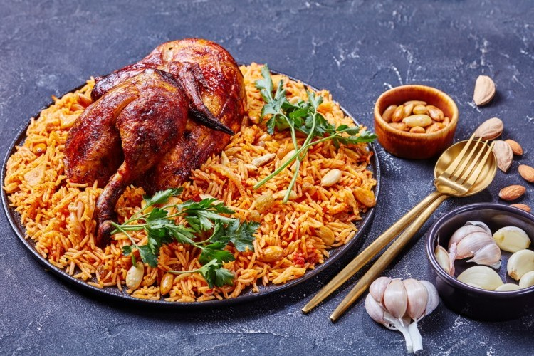

Al Kabsa - Traditional Saudi Rice and Chicken
Saudi Traditional Kabsa

Prep: 40 mins
1 hr 30 Min - Cook time
2 hrs 10 mins - Total
8 Servings
INGREDIENTS
- 1/2 teaspoon dried whole lime powder
- 1/2 teaspoon ground allspice
- 2 tbsp all-purpose flour
- 1/2 teaspoon ground cinnamon
- 1 onion, finely chopped
- 1/4 teaspoon ground cardamom
- 1/2 teaspoon saffron
- 1 (3 pound) whole chicken, cut into 8 pieces
- 1/4 teaspoon ground white pepper
- 1 pinch ground cumin
- 1 pinch ground coriander
- 3 1/4 cups hot water
- 1 cube chicken bouillon
- 1/4 cup tomato puree
DIRECTIONS
- First Step:
-
Mix together the saffron, cardamom, cinnamon, allspice, white pepper, and lime powder
in a small bowl, and set the spice mix aside.
- Second Step
-
Melt the butter in a large stock pot or Dutch oven over medium heat. Stir in the
garlic and onion; cook and stir until the onion has softened and turned translucent,
about 5 minutes. Add the chicken pieces and brown them over medium-high heat until
lightly browned, about 10 minutes. Mix in the tomato puree.
- Third Step
-
Stir in the canned tomatoes with their juice, the grated carrots, whole cloves,
nutmeg, cumin, coriander, salt, black pepper, and the Kabsa spice mix. Cook for about
3 minutes; pour in the water, and add the chicken bouillon cube.
- Fourth Step
-
Bring the sauce to a boil, then reduce the heat to simmer and cover the pot. Simmer
until chicken is no longer pink and the juices run clear, about 30 minutes.
- Fifth Step
-
Gently stir in the rice. Cover the pot and simmer until rice is tender and almost dry,
about 25 minutes; add the raisins and a little more hot water, if necessary. Cover and
cook for an additional 5 to 10 minutes or until the rice grains are separate.
This is our favorite recipe here at Saudi Kabsa. It has been enjoyed by Kabsa fans for many years. We hope you'll find that this recipe is delicious and also easy to follow; it's a piece of cake Kabsa!
USER COMMENTS
This is a very fun recipe to follow, because family makes it sweet and simple. This Kabsa is yummy !!!
- Ahmad S.
Q: Is there another recipe similar to Kabsa?
A: Bukhari Rice.
- Mohammed A.
This site can really engage my interest. Follow the recipe above and make it so! This Kabsa is number one.
- Adil Ghalib
LINKS
Search for other Kabsa Rice recipes
Home
Copyright (COPYRIGHT CHARACTER GOES HERE!!!) 2020 Saudi's Kabsa
Allrecipes Kabsa Production
All rights reserved